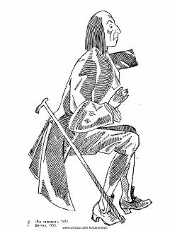

GSLemuel Gulliverning ajoyib va sarguzashtlarga boy sayohatlari haqidagi klassik asar.
Jonatan Sviftning ushbu mashhur asari inson tabiatini va jamiyat illatlarini o'tkir satira orqali fosh etadi. Asar bosh qahramoni Lemuel Gulliverning turli ajoyib mamlakatlar, jumladan mitti odamlar va ulkanlar o'lkasiga qilgan sarguzashtlari hikoya qilinadi.